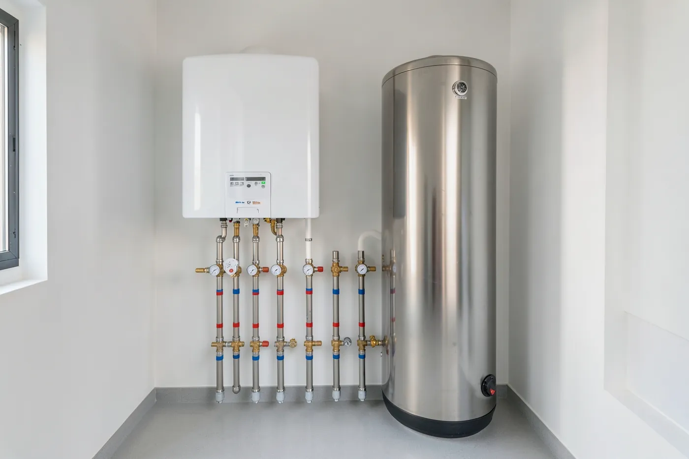
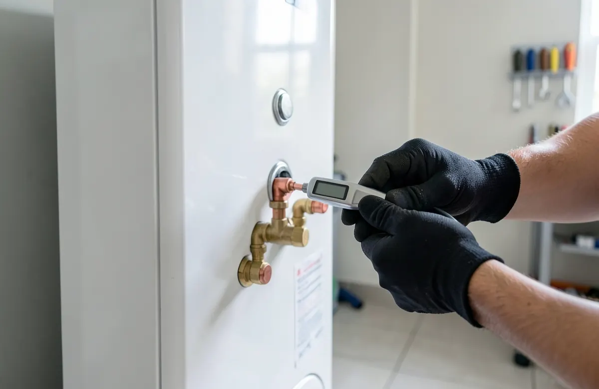
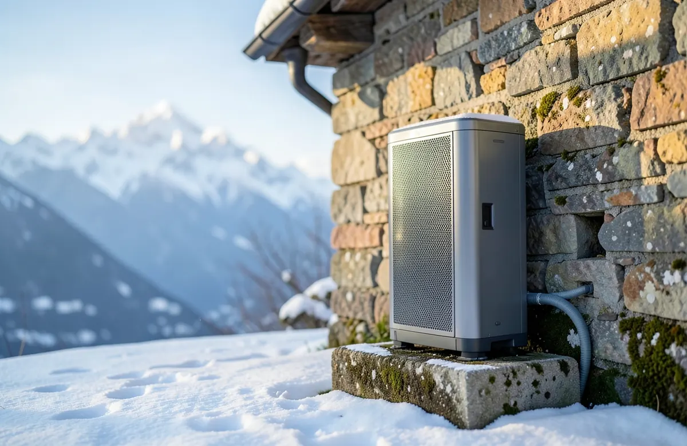
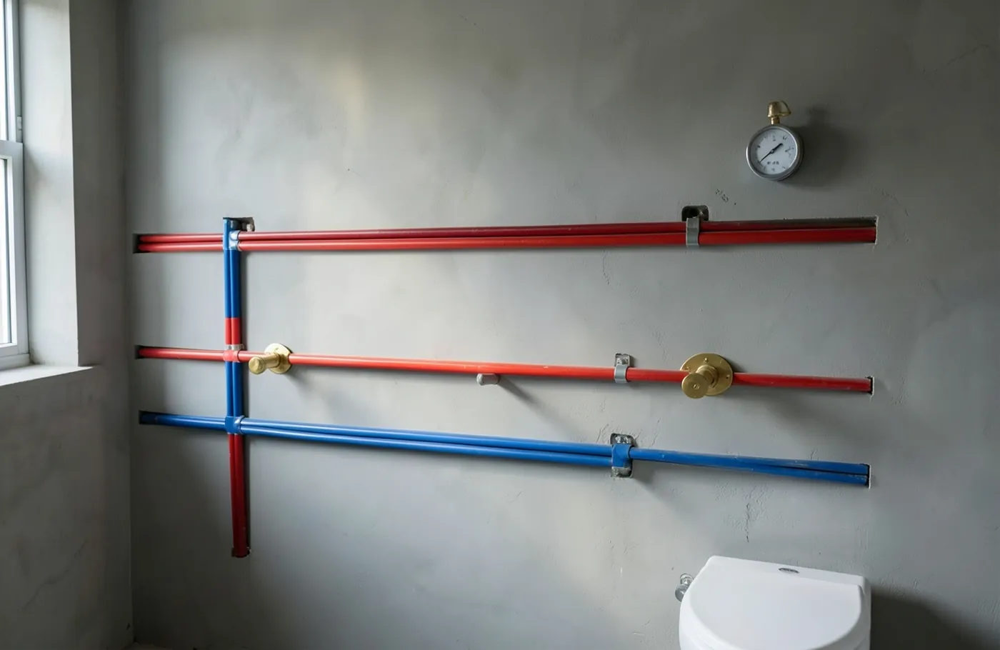
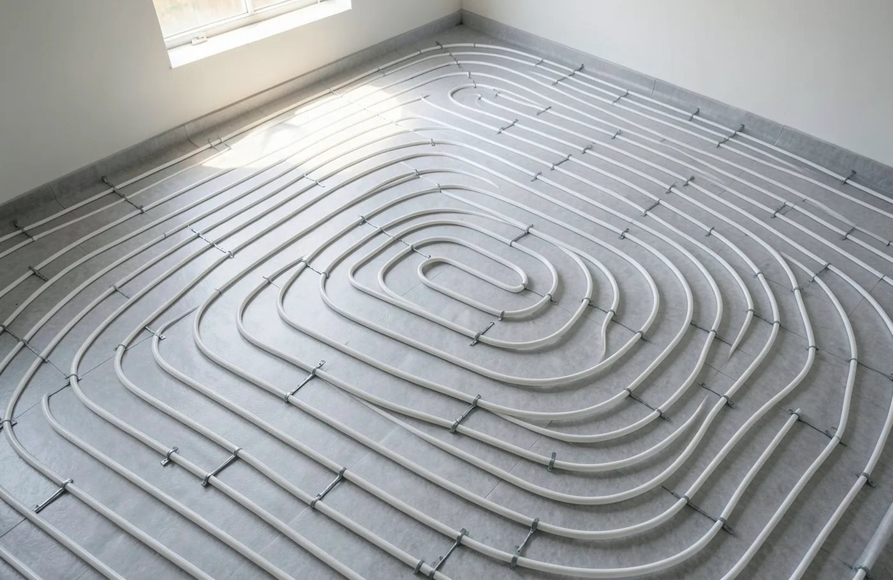
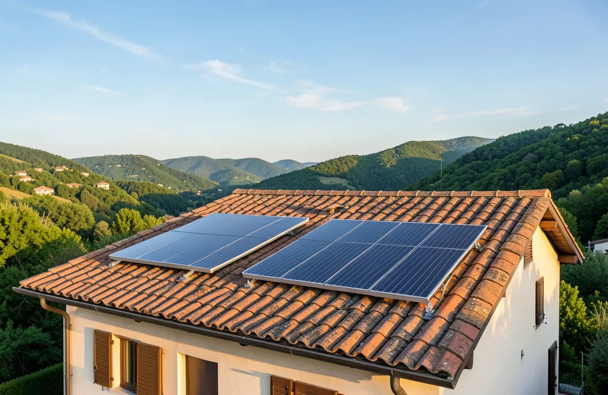
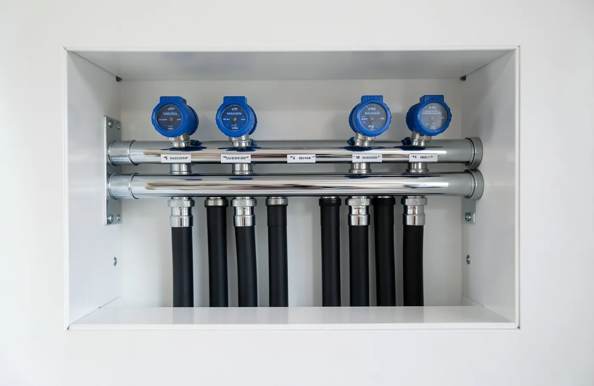
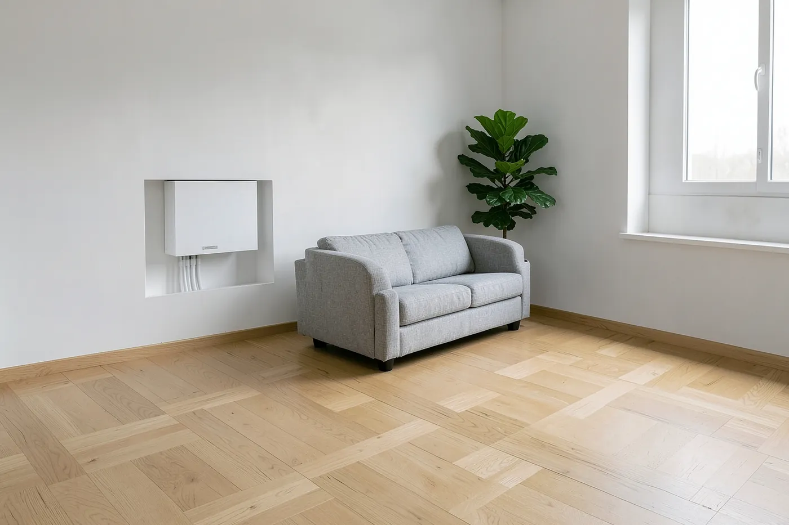
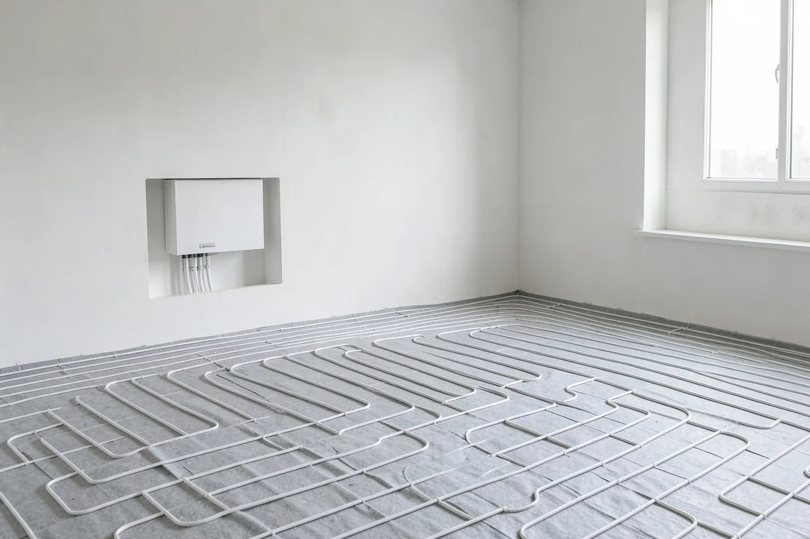
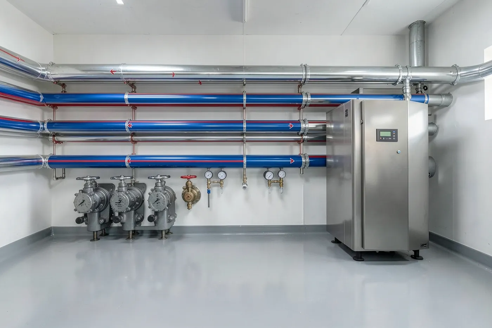

Ogni tuboal suo posto.
Riscaldamento, pompe di calore, climatizzazione, bagni e gas a L'Aquila dal 2004. Impianti posati con ordine, collaudati, certificati e seguiti nel tempo.
- Dal 2004 a L'Aquila
- Impianti certificati D.M. 37/2008
- Abilitati MePA per la Pubblica Amministrazione

Caldo, freddo, acqua e gas. Un solo referente.
Dall'impianto nuovo alla manutenzione, scegliamo con voi la soluzione adatta alla casa, al clima aquilano e al budget. Scegliete un servizio per vedere come lavoriamo.

Caldaie a condensazione
Sostituiamo la vecchia caldaia con una a condensazione dimensionata sulla casa, con scarico fumi a norma, analisi di combustione e messa in servizio. I collegamenti restano dritti, in vista e facili da manutenere.
- Sopralluogo e scelta del modello
- Smontaggio e smaltimento della vecchia caldaia
- Libretto di impianto e dichiarazione di conformità

Pompe di calore e sistemi ibridi
Con gli inverni dell'Aquila una pompa di calore va scelta sui numeri giusti. Valutiamo dispersioni, terminali e potenza, e quando conviene la abbiniamo a una caldaia in un sistema ibrido.
- Pompe di calore aria-acqua
- Sistemi ibridi con caldaia
- Supporto per incentivi e detrazioni
Climatizzazione
Climatizzatori mono e multisplit, canalizzati e sistemi per uffici. Linee frigorifere nascoste o in canalina, scarico condensa con la pendenza giusta, unità esterne fissate in modo pulito.
- Installazione e sostituzione
- Sanificazione e manutenzione
- Impianti per negozi e uffici

Bagni e impianti idrici
Rifacciamo impianti idrici e scarichi partendo dalle tracce, con tubazioni parallele, attacchi alla stessa quota e prova di tenuta prima di chiudere il muro. Poi consegniamo il bagno finito, chiavi in mano.
- Rifacimento completo del bagno
- Sostituzione di tubazioni vecchie
- Ricerca e riparazione di perdite

Riscaldamento a pavimento
Impianti radianti posati con passo regolare, collettori ordinati in cassetta e termoregolazione stanza per stanza. Il collaudo in pressione si fa sempre prima del massetto.
- Progettazione dei circuiti
- Collettori e termoregolazione
- Lavaggio e bilanciamento
Impianti gas
Nuove linee gas e adeguamenti, con tubazioni fissate a regola d'arte, prove di tenuta e la documentazione per attivare la fornitura.
- Nuovi allacci e modifiche
- Prove di tenuta
- Adeguamento alle norme

Solare termico
Collettori solari per l'acqua calda sanitaria, integrati con caldaia o pompa di calore, per consumare meno combustibile tutto l'anno.
- Collettori e accumuli
- Integrazione con l'impianto esistente
- Valutazione dei consumi

Manutenzione e assistenza
Controlli periodici, riparazioni e interventi anche su impianti installati da altri. Ogni intervento viene annotato sul libretto di impianto.
- Manutenzione programmata
- Ricerca e riparazione guasti
- Verifica di impianti esistenti
La qualità sta in quello che poi non si vede.
Un impianto radiante resta sotto il pavimento per decenni. Lo posiamo come se dovesse restare in vista.
- Passo dei tubi costante e fissaggi regolari
- Prova di tenuta in pressione prima del massetto
- Collettore in cassetta, circuiti etichettati stanza per stanza
- Dichiarazione di conformità a fine lavori


In cantiere FinitoTrascinate il cursore per confrontare la stessa stanza in cantiere e a lavoro finito.
Cantieri in ordine, anche prima di chiudere i muri.
Tracce dritte, colori separati per caldo e freddo, collettori allineati. È il modo di lavorare che si ritrova poi in ogni impianto finito.
Immagini illustrative, da sostituire con le fotografie dei lavori realizzati.
Dal sopralluogo all'assistenza, in quattro passaggi.
Sapete sempre cosa faremo, quanto costerà e quando finiremo. A lavoro concluso restiamo il vostro riferimento per l'impianto.
- 1
Sopralluogo
Vediamo l'edificio e l'impianto esistente, ascoltiamo le vostre esigenze e prendiamo le misure.
- 2
Preventivo scritto
Vi spieghiamo la soluzione consigliata e le alternative, con un preventivo chiaro voce per voce.
- 3
Posa e collaudo
Materiali di marca, cantiere ordinato, collaudo finale e dichiarazione di conformità prevista dal D.M. 37/2008.
- 4
Assistenza nel tempo
Manutenzioni programmate, libretto di impianto aggiornato e un numero da chiamare quando serve.

Impianti per enti pubblici e aziende.
Scuole, uffici, impianti sportivi, condomini e attività commerciali chiedono documentazione impeccabile e tempi certi. Speranza Impianti è abilitata sul Mercato Elettronico della Pubblica Amministrazione di Consip e può ricevere ordini diretti e richieste di offerta.
Per le aziende curiamo riscaldamento, climatizzazione e impianti idrico-sanitari di uffici, negozi e capannoni, con contratti di manutenzione su misura.
Richiedi un'offerta- OG 11Impianti tecnologici
- OS 3Impianti idrico-sanitario, cucine, lavanderie
- OS 30Impianti interni elettrici, telefonici, radiotelefonici e televisivi
- ServiziImpianti termoidraulici e di condizionamento
Categorie di abilitazione al MePA di Consip ottenute nel 2022, distinte dall'attestazione SOA.
L'Aquila e dintorni.
L'ufficio è in Piazza Mariano D'Ayala, a Santa Barbara. Da qui raggiungiamo in poco tempo la città, le frazioni e i comuni vicini. Per lavori fuori zona chiamateci e valutiamo insieme.
- L'Aquila
- Centro storico
- Pettino
- Santa Barbara
- Coppito
- Sassa
- Preturo
- Pile
- Torretta
- Paganica
- Bazzano
- San Gregorio
- Onna
- Arischia
- Assergi
- Camarda
- Monticchio
- Scoppito
- Tornimparte
- Pizzoli
- Barete
- Lucoli
- Ocre
- Fossa
- Poggio Picenze
- Barisciano
- Rocca di Mezzo
- Cagnano Amiterno
- Montereale
Domande frequenti
In quali zone lavorate?
Lavoriamo a L'Aquila città e nelle frazioni, e nei comuni della provincia vicini al capoluogo. Per interventi più lontani chiamateci e valutiamo caso per caso.
Ogni quanto va fatta la manutenzione della caldaia?
La frequenza della manutenzione la indicano il costruttore e l'installatore nel libretto di impianto, e per la maggior parte delle caldaie domestiche è annuale. Il controllo di efficienza energetica ha invece scadenze fissate dalla legge in base al tipo e alla potenza dell'impianto. Vi diciamo noi quando è il momento e aggiorniamo il libretto.
Rilasciate la dichiarazione di conformità?
Sì. Ogni impianto nuovo o modificato viene consegnato con la dichiarazione di conformità prevista dal D.M. 37/2008, completa degli allegati obbligatori. È il documento che serve per l'agibilità, per le pratiche di incentivo e per la sicurezza della casa.
Una pompa di calore funziona anche con gli inverni dell'Aquila?
Le pompe di calore moderne lavorano anche con temperature esterne molto basse, ma vanno dimensionate bene e abbinate ai terminali giusti. In molte case aquilane la soluzione migliore è un sistema ibrido con caldaia a condensazione. Lo valutiamo insieme durante il sopralluogo.
Mi aiutate con incentivi e detrazioni?
Vi indichiamo quali incentivi e detrazioni possono applicarsi al vostro intervento e prepariamo la documentazione tecnica che spetta all'impresa. Le regole cambiano spesso, per questo le verifichiamo ogni volta prima del preventivo.
Lavorate anche per enti pubblici e aziende?
Sì. L'impresa è abilitata sul Mercato Elettronico della Pubblica Amministrazione (MePA) per impianti tecnologici, impianti idrico-sanitari, impianti elettrici interni e servizi termoidraulici e di condizionamento.
Raccontateci cosa vi serve.
Tre domande e la richiesta è pronta. Vi richiamiamo noi per fissare il sopralluogo. Se preferite, telefonate direttamente.
- Orari ufficio
Lun, mar, gio, ven 8:15–12:45 e 14:15–17:00 Mercoledì 8:15–12:45 Sabato e domenica Chiuso
La mappa è fornita da Google. Caricandola, Google riceve alcuni dati di navigazione e può impostare cookie.
Caldaia da cambiare o impianto da rifare?
Una telefonata e fissiamo il sopralluogo.